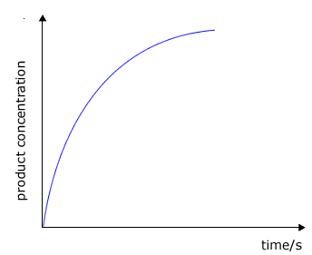
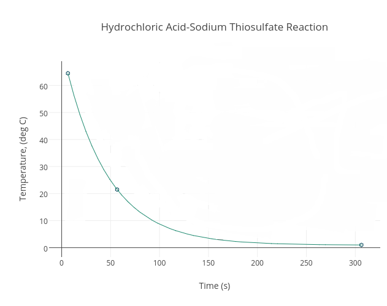

Chemistry Notes
Reaction Rates and Reversible Reactions
Reaction Rates
- The rate of a chemical reaction is taken as the rate at which products are formed or the rate at which reactants disappear.
Measurements of Reaction Rates
- Reaction rates are measured in terms of
- How much product appears in a given time.
- How much reactant disappears in a given time
- Rates curves are then plotted
- These are plots of concentration or properties, which are functions of concentration against
time
Graph: concentration of products against time.

Graph: concentration of reactants against time.
Apparatus used to Determine Rates of Reaction
Examples:
- Reaction between dilute HCl and marble chips.
- This can be by:
- Measuring the decrease in mass with time
Apparatus:
Graph: - Measuring the volume of the gas produced with time and then plotting a
graph.
Apparatus:
Graph:
- Measuring the decrease in mass with time
- Similar experiments maybe done using zinc granules and zinc powder with an
acid
Worked example
Marble chips and dilute hydrochloric acid were mixed. The mass of the reaction mixture was measured and recorded with time. The results are shown in the table below.
Time (sec) 0 30 60 90 12 150 180 21 240 270 300 Mass of mixture (g) 42.0 41.5 41.0 40.7 40.4 4.02 40.1 40.0 40.0 40.0 40.0 Loss in mass (g) - Complete the table. (5 marks)
- Draw a graph of loss of mass against time. (3 marks)
- On the same axes sketch the curves that would be obtained if:
- the acid was more concentrated. (1mark)
- larger marble chips were used. (1mark)
Collision Theory and Activation Energy
- The collision theory of reacting particles postulates that:
- Reacting particles must collide before a chemical reaction occurs
- Not all collisions are effective/ result in chemical reaction
- Only those particles with sufficient energy result in effective collisions i.e. energy equal to or greater than the activation energy.
- Any factor, which increases the rate of a chemical reaction, does so by increasing the number of effective collisions;
Activation energy (EA)
- Is the minimum amount of energy required by reacting particles to cause a successful collision to form products;
- It refers to the energy an energy barrier that must be overcome by the reactants to be converted to products;
- This energy barrier determines the magnitude of the activation energy of the reactants;
Factors Determining the Value of Activation Energy
- Strength of the bonds in the particles of the reactants;
- Whether the reaction is exothermic or exothermic;
- Presence of catalysts;
Graph: activation energy:
Factors Affecting the Rate of Reaction
- Factors that increase the rate of a reaction does so by:
- Increasing number of effective collisions;
- Lowering the activation energy; since a reaction with high activation energy is slow at ordinary conditions;
- These factors are:
- Concentration of reactants
- Temperature
- Surface area (size of the particles)
- Catalyst
- Light
- Pressure
- Concentration of reactants.
- Increase in concentration of one of the reactants increases the rate of the
reaction;
Reason: - Higher concentration results in a greater probability of collision hence a higher rate of
reaction
Example: reaction between Mg(s) and 2M and 4M hydrochloric acid.
Graphical representation - The maximum volume of a gas collected in both experiments is the same because the number of moles of HCl is the same
- Curve for 4M HCl is steeper indicating a faster rate because the acid is more concentration
- The 4M HCl contains more H+ ions per unit volume than 2M HCl. This reaction takes a shorter time to go to completion
- The start of the flat part of the curve indicates the end of the
reaction;
Diagram: - Note: Rate of reaction can also be verified by measuring the rate of disappearance of reactants per unit time.
- Reactants with 4M HCl will disappear faster;
- Curve for a faster reaction rate is always to the left of the reference
curve;
Worked example:
In an experiment to determine the effect of concentration on the rate of a reaction, various concentrations of sodium thiosulphate were reacted with equal volume of hydrochloric acid and the time taken for the precipitate to obscure a cross on paper put under the reaction beaker was determined. The results are shown in the table below.
Volume of S2O32- (cm3) Volume of H2O (cm3) Volume of HCl (cm3) Time for cross to disappear (s) 50 0 10 20 40 10 10 25 30 20 10 34 20 30 10 52 10 40 10 70
- Plot a graph of time (vertical axis) against volume of aqueous sodium thiosulphate. (3marks)
- From the graph estimate the time for the cross to disappear when 10 cm3 of hydrochloric acid is added to a mixture of 35cm3 of aqueous thiosulphate and 15cm3 of water. (2 marks)
- What is the effect on the rate of the reaction of adding more water to the aqueous sodium thiosulphate? Explain your answer. (2 marks)
- On the same graph, plot the curves you would obtain if the experiment were repeated
at:
- at 45oC; (1mark)
- using 10 cm3 of less concentrated hydrochloric acid. (1mark)
- Increase in concentration of one of the reactants increases the rate of the
reaction;
- Effect of temperature.
- An increase in temperature increases the rate of a chemical
reaction.
Reasons: - Increase in temperature increases the kinetic energy of the reacting particles;
- The particles therefore move faster leading to more frequent and more effective collisions.
- The rate of reaction therefore increases;
Example: reaction between sodium thiosulphate and dilute HCl (aq)
Stoichiometric equation:
Na2S2O3(aq) + 2HCl(aq) → 2NaCl(aq) + H2O(l) + S(s) + SO2(g)
Ionic equation:
S2O32-(aq) + 2H+(aq) → S(s) + SO2(g) + H2O(l); - The time taken to precipitate the same amount of sulphur by the same volume of acid at different temperatures is measured.
- Concentration of thiosulphate solution and the acid are kept constant.
Graph: relationship between time and temperature in a reaction.
 - The rate is proportionate to 1/t;
Hence; - The higher the temperature the shorter the time for completion of the reaction and the
higher the rate of the reaction;
Alternatively: - You can plot a graph of 1/t against
temperature;
Graphically:
- An increase in temperature increases the rate of a chemical
reaction.
- Effect of particle size (surface area).
- A decrease in particle size (surface area) increases the rate of a chemical reaction; and an
increase in particle size decreases the rate of a chemical
reaction.
Reason - A smaller particle size means a larger total surface area and this offers a large surface on which the reacting particles can collide;
- This means more collisions, hence more chances of effective collisions leading to a higher
rate of reaction;
Example: Reaction between dilute HCl and marble chips - The larger CaCO3 granules undergo a slower rate of reaction than the finely
powdered CaCO3
Equation:
CaCO3(s) + 2H+(aq) → Ca2+(aq) + CO2(g) + H2O(l)
Graph 1: volume of gas produced against time (for granules and powder)
Graph 2: loss in mass of calcium carbonate against time
Worked example:- Exactly 3.0g of powdered carbonate of metal M of formula MCO3 were mixed
with excess dilute hydrochloric acid. The mass of the reaction vessel and its
contents were recorded at various times. From these readings, the total loss in
mass of the reaction vessel and its contents was calculated and recorded as
shown in the table below. The experiment was carried out at room temperature.
Time (secs) 0 30 60 90 120 150 180 210 Total loss in mass (g) 0 0.08 0.37 0.90 1.19 1.28 1.32 1.32 -
- Plot a graph of total loss in mass against time. (1mark)
- Determine the total loss in mass after 100 seconds. (2 marks)
-
- Write an equation for the reaction that occurs. (1mark)
- calculate the number of moles of:
- Carbon (IV) oxide gas produced. (2 marks)
- MCO3 used. (2 marks)
- Calculate the relative atomic mass of metal M. (3 marks)
- On the same axis sketch a curve that you are likely to obtain if the
experiment was repeated:
- 9. at 50oC. Explain. (2 marks)
- Using MCO3 granules instead of the powder. Explain. (2 marks)
-
- Exactly 3.0g of powdered carbonate of metal M of formula MCO3 were mixed
with excess dilute hydrochloric acid. The mass of the reaction vessel and its
contents were recorded at various times. From these readings, the total loss in
mass of the reaction vessel and its contents was calculated and recorded as
shown in the table below. The experiment was carried out at room temperature.
- A decrease in particle size (surface area) increases the rate of a chemical reaction; and an
increase in particle size decreases the rate of a chemical
reaction.
- Effect of catalysts
- Catalysts are substances which alter the rate of a chemical reaction without being consumed, e.g. finely divided iron in the harber process;
- They alter the rate of a chemical reaction but remain unchanged at the end of the reaction;
- They can therefore be reused at the end of the reaction;
Modes of action of catalysts:- Provision of a surface over which particles can react.
Note: Due to this solid catalysts are more effective when used in powder form; - Formation of short-lived intermediate compounds with products which then break up to give the products and the catalyst;
- By adsorption;
- Provision of a surface over which particles can react.
- Note: - Generally, a catalyst increases the rate of a reaction by providing a different pathway of lower activation energy.
- This means more collisions can overcome this energy barrier and result in a reaction.
- It lowers the activation energy of the reaction;
- Catalysts are also reaction-specific;
Some common catalysts
Catalyst Reaction catalyzed Manganese (IV) oxide Dissociation of hydrogen peroxide to give oxygen gas and water; Vanadium (V) oxide or platinum Contact process for the conversion of sulphur (IV) oxide to sulphur (VI) oxide; Platinum Manufacture of nitric acid in the Oswald s process; Finely divided ironn or vanadium Haber process in the manufacture of ammonia; Nickel Hydrogenation of oils to make fats;
Hydrogenation of unsaturated hydrocarbonsCopper (II) oxide Oxidation of ethanol to produce ethanal; Titanium (IV) chloride Ziegler method of polymerizing alkenes
Graph: reaction rates with and without a catalyst.
Worked example:
Hydrogen peroxide decomposes slowly to water and oxygen under normal conditions. When a little manganese (IV) oxide is added to the solution the rate of decomposition is enhanced. The results of an experiment on the decomposition of hydrogen peroxide in presence of manganese (IV) oxide are shown below. Study the results and answer the questions that follow
Volume of oxygen (cm3) 0 19 27 33 36 38 39 40 40 Time (seconds) 0 30 60 90 120 150 180 210 240 - Plot a graph of volume of oxygen produced (vertical axis) against time. (3 marks)
- What is the rate of reaction:
- during the first 30 seconds. (2 marks)
- between 30 seconds and 60 seconds. (2 marks)
- Explain why:
- the slope of the curve is steeper at the start of the reaction. (2 marks)
- the curve goes flat at the end of the reaction. (2 marks)
-
- Suggest the role of manganese (IV) oxide I the decomposition of hydrogen peroxide. (1mark)
- Comment on change in mass of manganese (IV) oxide at the end of the reaction. Explain.(2 marks)
- Effect of light on the rate of reaction
- The effect of heating and illuminating substances is the same;
- In both cases the constituent particles absorb radiant energy leading to an increase in the number of particles with activation energy resulting in increased rate of reaction;
- Light energizes the particles involved in a reaction;
- This increases the chances of effective collisions per unit time thus increasing the rate of reaction.
- Light of higher frequencies give higher reaction rates e.g. UV Light;
- Examples of reactions affected by light are those involving halogens:
Examples of reactions affected by light.
- Reaction between Cl2(g) and H2(g) does not take place in the
dark but is explosive in bright light;

- For the reaction between methane and bromine; decolourisation of bromine only occurs
in presence of light;

Experiment: Effect of light on the decomposition of silver bromide.
Procedure:
- About 20cm3 of 0.1M potassium bromide is put in a glass beaker.
- 5cm3 of 0.05M silver nitrate solution is added.
- The resulting pale yellow precipitate is divided into three portions in 3 separate test tubes.
- One of the test tubes in immediately placed in a dark cupboard; the second on a
bench and the third is placed in a direct source of light e.g. sunlight.
Observations.
- Formation of a pale yellow precipitate of silver bromide when silver nitrate reacts
with potassium bromide.
Equation:

- Test tube in light: precipitate changes colour from pale yellow to grey.
- Test tube on the bench: slight change in colour from pale yellow to slight grey.
- Test tube in dark cupboard: no observable (noticeable)
colour change in precipitate.
Explanation:
- Light decomposes silver bromide to metallic silver (hence the grey colour) and
bromine.
Equation:

- No observable change in test tube placed in darkness due to lack of light;
- The degree of decomposition and hence change depends on the light intensity falling on the test tubes;
- The rate of decomposition of silver bromide increases with increase in light
intensity.
Conclusion:
- Light affects the rate of some chemical reactions by energizing the particles involved in a reaction hence increasing the chances of effective collisions per unit time thus increasing the rate of reaction.
Application of effect of light on reaction rate.- Processing of black and white photographic films is done in dark to prevent the decomposition of the silver bromide that is usually used to coat photographic plates;
Further examples of reactions affected by light:
- Reaction between Cl2(g) and H2(g) does not take place in the
dark but is explosive in bright light;
- Pressure
- Increase in pressure increases the rate of reaction involving the formation of small volume of product because of increase in concentration and slight increase in temperature
- In a given volume the higher the number of molecules of a given gas in a container, the greater the pressure;
- Increase in pressure causes the same effect as increase in concentration;
- Thus the rate of reactions involving gases can be increased by increasing the pressure of the gases
- Note: From gas laws, decreases in volume results in increase in pressure. Thus, reactions accompanied by decrease in volume move faster to completion.


Reversible Reactions
- Are reactions which can be made to go to either direction (forward or backward) by changing conditions such as temperatures, pressure etc.
- In such cases none of the reactants is completely used up and so the reaction does not go
into completion.
Note: - Reversible reactions are of two types
- Reversible physical changes e.g. heating ice, iodine etc.
- Reversible chemical changes e.g. heating hydrated copper (II) sulphate, Haber
process, decomposition of limestone, heating blue cobalt chloride, ammonium chloride
etc.
Examples: - Reaction of nitrogen and hydrogen to give ammonia in the Haber process .
N2(g) + 3H2(g) ⇌ 2NH3(g) - The reversible sign means the reaction can reach a state of equilibrium if left undisturbed.
Explanations of Reversible Reactions
- Consider the curves below:

Point (a): Forward reaction. - At the start of the reaction, the rate of the forward reaction is faster.
- The concentration of the reactants is greatest at the beginning.
- The rate of forward reaction and the concentration of reactants decreases with time as the
reaction proceeds.
Point (b): Backward reaction. - At zero time the rate of the backward reaction is zero.
- The concentration of the products is lowest at this time.
- The rate of the backward reaction and concentration of products increases as the forward
reaction proceeds.
Point (c): Equilibrium. - It comes to a time (t) when the rate of forward reaction is equal to the rate of backward reaction.
- This balance is called equilibrium.

Equilibrium
- Is the state at which the rate of forward reaction is equal to the rate of backward reaction.
Types of Equilibrium
Static Equilibrium
- Refers to a situation when two opposing forces balance each other and whatever was happening before comes to a standstill.
Dynamic Equilibrium
- Refers to a situation when two opposing processes, the forward and reverse, continue taking place but at the same rate.
- The equilibrium is said to be dynamic and this state of balance can be reached from either
direction.
Examples:
3Fe(s) + 4H2O(g) ⇌ Fe3O4(s) + 4H2(g) - The Equilibrium state here is established when:
- Either steam is passed over heated iron in a closed container; or
- When hydrogen is passed over heated iron oxide;
Characteristics of Equilibrium Systems.
- The concentrations of reactants and products do not change after the equilibrium has been
reached unless the system is disturbed.
Note:
Observable properties of reactants or products such as colour, mass, volume, PH, temperature etc can be used to detect whether a system is in equilibrium or not.
Examples:
Property How it can be used to detect attainment of equilibrium Colour The color intensity remains constant equilibrium Volume Total volume of solution remains constant at equilibrium; Precipitate The height of the precipitate remains constant; - The equilibrium can be reached from either direction.
- All the reactants and products are present in the system.
Factors Affecting the Position of Equilibrium
- Such factors act as a strain on the state of equilibrium and the system reacts in a way to oppose the change.
- The factors are:
- Temperature
- Pressure
- Concentration
- Catalysts.
- Temperature
Endothermic reactions
- Increase in temperature favours the endothermic
reactions;
Example:
N2O4(g) ⇌ 2NO2(g); ΔH = + ve
Pale yellow dark brown - Increase in temperature shifts the equilibrium to the right; since the reaction is endothermic and hence more yield of nitrogen (IV) oxide; hence dark brown fumes will be observed;
- Decrease in temperature shifts the equilibrium to the left; since the reaction is endothermic favoured by low temperatures; hence formation of N2O4 ; and the pale yellow colour is observed;
Exothermic reactions:
- Decrease in temperature favours exothermic reactions.
Example:
2SO2(g) + O2(g) ⇌ 2SO3(g); ΔH = -ve
Thus: - Decrease in temperature causes more yield of sulphur (VI) oxide; because the equilibrium shifts to the right; since the reaction is exothermic favoured by low temperatures;
- Increase in temperature causes SO3 to decompose decreasing its yields. Increase in temperature shifts the equilibrium to the left; because the reaction is exothermic which is favoured by low temperatures;
- Increase in temperature favours the endothermic
reactions;
- Pressure
- Increase in pressure favours the side with fewer numbers of gaseous molecules since this is
the side where pressure is reduced (low).
Example:
N2(g) + 3H2(g) ⇌ 2NH3(g) - Increase in pressure favours the production of ammonia; by shifting the equilibrium position to the right; because the volume of gaseous reactants is higher than the volume of gaseous products.
- Decrease in pressure leads to the production of less ammonia (ammonia decomposes); by
shifting the equilibrium position to the left; because the volume of gaseous reactants
is higher than the volume of gaseous
products.
N2O4(g) ⇌ 2NO2(g)
Pale yellow dark brown
Increase in pressure: - Shifts the equilibrium to the left; leading to formation of more N2O4
hence mixture turns pale yellow; because the volume of gaseous products
(NO2) is higher than the volume of gaseous reactants
(N2O4).
Decrease in pressure: - Shifts the equilibrium position to the right; leading to formation of more NO2
hence colour turns dark brown; because the volume of gaseous reactants
(N2O4) is lower than the volume of gaseous
products (NO2);
Note: - - Change in pressure has no effect on the equilibrium mixture where gaseous molecules on
the two sides are equal
Example:
N2(g) + O2(g) ⇌ 2NO(g) - Increase or decrease in pressure has no effect on position of equilibrium; because the
volume of gaseous reactants is equal to volume of gaseous
products;
Note: - Generally reactions involving only solids and, or liquids are not affected by pressure
change because they are not
compressible;
Summary: effects of pressure on equilibrium
Reaction Effects of pressure change on position of equilibrium Increase Decrease N2O4(g) ⇌ 2NO2(g) Equilibrium shifts to the left; more N2O4 is formed; Equilibrium shifts to the right; more NO2 is formed; N2(g) + 3H2(g) ⇌ 2NH3(g) - More NH3 is formed; equilibrium shifts to the right; since volume of gaseous reactants is higher than volume of gaseous products - More N2 and H2 are formed; equilibrium shifts to the left; since volume of gaseous reactants is higher than volume of gaseous products 2SO2(g) + O2(g) ⇌ 2SO3(g) - More SO3 is formed; equilibrium shifts to the right (forward reaction is favoured); since volume of gaseous reactants is higher than volume of gaseous products - Less SO3 is formed (more SO2 and O2 are formed); equilibrium shifts to the left (backward reaction is favoured); since volume of gaseous reactants is higher than volume of gaseous products 4NH3(g) + 5O2(g) ⇌ 4NO(g) + 6H2O(g) - More NH3 and O2 is formed; equilibrium shifts to the left; since volume of gaseous reactants is lower than volume of gaseous products - Less NH3 and O2 is formed (more NO and H2O are formed); equilibrium shifts to the right; since volume of gaseous reactants is lower than volume of gaseous products H2(g) + Cl2(g) ⇌ 2HCl(g) - No effect on the equilibrium; because volume of gaseous reactants and volume of gaseous products is the same; - No effect on the equilibrium; because volume of gaseous reactants and volume of gaseous products is the same;
- Increase in pressure favours the side with fewer numbers of gaseous molecules since this is
the side where pressure is reduced (low).
- Concentration
- Consider the equilibrium in bromine water system:
Br2(aq) + H2O(l) ⇌ OBr-(aq) + Br-(aq) + 2H+(aq)
Yellow orange Colourless
Addition of sodium hydroxide to the equilibrium: - When NaOH (aq) is added to the equilibrium, the concentration of H + decrease and the rate
of forward reaction are favoured (equilibrium shifts to the right); the reaction of
bromine with water increases andthere is loss of colour of bromine
water.
Explanation: - Addition of sodium hydroxide provides hydroxyl ions into the equilibrium.
- The hydroxyl ions react with the hydrogen ions (on the right of equilibrium) to form
water.
Equation:
OH-(aq) + H+(aq) ⇌ H2O(l) - This process removes hydrogen ions from the equilibrium mixture.
- This shifts the equilibrium to the right hence formation of more products;
- This leads to a change in colour from yellow orange to colourless;
Addition of hydrochloric acid: - Addition of HCl(aq) is added concentration of H+ increases; more
bromine is formed and the orange-yellow colour of bromine water becomes more
intense;
Explanation: - Addition of hydrochloric acid introduces more hydrogen ions into the equilibrium;
- The hydrogen ions react with the colourless bromide and hypobromite ions to form yellow-orange aqueous bromine;
- This shifts the equilibrium to the left hence the increase in the intensity of the
yellow-orange colour of bromine water;
Further examples:
- Given the equilibrium:
SO2(g) + O2(g) ⇌ 2SO3(g)
Removal of sulphur (VI) oxide:
-Reducing the concentration of SO3 by removing it causes more sulphur (IV) oxide to be converted to sulphur (IV) oxide.
Addition of either oxygen or sulphur (IV) oxide.
-Addition of either sulphur (IV) oxide or oxygen to the equilibrium shifts the equilibrium to the right; due to increase of concentration of products hence more yield of sulphur (VI oxide;
Addition of pyrogallic acid:
-Addition of pyrogallic acid into the equilibrium shifts the equilibrium to the left; since pyrogallic acid dissolves oxygen gas reducing concentration of reactants on the left hence less yield of sulphur (VI) oxide; - Given the equilibrium:
2CrO42-(aq) + 2H+(aq) ⇌ 2Cr2O72-(aq) + H2O(l)
Yellow Orange
Addition of sodium hydroxide to the equilibrium:
When NaOH (aq) is added to the equilibrium, the concentration of H + decrease and the rate of backward reaction are favoured (equilibrium shifts to the left); the reaction of dichromate ions with water to form chromate ions and hydrogen ions increases and there is change in colour to yellow.
Explanation:
-Addition of sodium hydroxide provides hydroxyl ions into the equilibrium.
-The hydroxyl ions react with the hydrogen ions (on the left of equilibrium) to form water.
Equation:
OH-(aq) + H+(aq) ⇌ H2O(l)
-This process removes hydrogen ions from the equilibrium mixture.
- This shifts the equilibrium to the left hence formation of more reactants (chromate and hydrogen ions);
- This leads to a change in colour from orange to yellow;
Addition of hydrochloric acid:
Addition of HCl(aq) is added concentration of H+ increases; more dichromate solution is formed and the orange colour of dichromate ions become more intense;
Explanation:
- Addition of hydrochloric acid introduces more hydrogen ions into the equilibrium;
- The hydrogen ions react with the yellow chromate solution to form orange dichromate solution (and water);
- This shifts the equilibrium to the right hence the increase in the intensity of the orange colour of dichromate solution;
Generally:
- A change in concentration disturbs the already established equilibrium by making the reaction rate in one direction faster
- The reaction then proceeds predominantly in that direction until equilibrium is re established
- Given the equilibrium:
- Consider the equilibrium in bromine water system:
- Effect of catalyst
- Presence of a catalyst has no effect on the position of the equilibrium but alters the rate at which the equilibrium is attained.
- Catalysts usually allow the equilibrium to be reached in a shorter period of time by increasing the rates of the reactions
Le Chatelier's Principle
- States that:
When stress is applied to a system in equilibrium, the system reacts so as to oppose the stress. - This implies that when a change in condition is applied to a system in equilibrium, the
system moves so as to oppose the change.
Note: - The effect of different factors on equilibrium was first investigated in 1888 by a French Chemist; Henri Louis Le Chatelier.
- All explanations so far described are based on Le Chatelier s principle.
Industrial applications of chemical equilibrium.
- The ability to change the position of an equilibrium by varying the conditions has been important in industrial processes as industrialists aim at obtaining maximum products at minimum cost and shortest time possible.
- Conditions required to obtain greatest yield of products at minimum costs and shortest time possible are called optimum conditions .
- Such optimum conditions are obtained by continuous removal of products hence reduction in
its concentration or varying external factors like temperature and
pressure.
Summary: Optimum Conditions for Common Industrial Processes
| Condition | Optimum condition for | |
| Haber process N2(g) + 3H2(g) ⇌ 2NH3(g) ; ΔH=- 92KJMol-1 |
The contact process 2SO3(g) + O2(g) ⇌ 2SO3(g) ; ΔH = -197Kjmol-1 |
|
| Temperature | - The reaction is exothermic hence favoured by low temperatures; which shift the
equilibrium to the right hence more yield of ammonia gas; - However rate at which the NH3(g) will be produced would be too slow and thus uneconomical; an optimum temperature of about 450o C is thus normally used; |
- Forward reaction is exothermic thus increase in temperature favours backward
reaction; shifts the equilibrium to the left hence less yield of SO2(g); - Low temperature will favour forward reaction thus shifts the equilibrium to the right; hence more production of SO2(g) ; However rate of yield will be too slow and hence optimum temperature for maximum yield are set at about 450o C; |
| Pressure |
- Increase in pressure favours the forward reaction; shifting the equilibrium to the
right hence more yield of ammonia; because the volume of gaseous reactants is
higher than the volume of gaseous products; |
- An increase in pressure will shift the equilibrium to the left leading to low
yield of sulphur (IV) oxide; since the volume of gaseous reactants is lower than
the volume of gaseous products; - Thus the optimum pressure used is atmospheric pressure, which gives a percentage conversion of SO2(g) to SO3(g) of about 96%. |
| Concentration | - Removal of ammonia gas shifts the equilibrium to the right hence more yield of
ammonia; since this removal lowers concentration of NH3(g) - thus for maximum yield ammonia is removed as soon as it is produced; so that more H2(g) and N2(g) can continue reacting; |
- Removal of sulphur (VI) oxide gas shifts the equilibrium to the right hence
more yield of SO3(g); since this removal lowers its concentration; - thus for maximum yield SO3(g) is removed as soon as it is produced; so that more SO2(g) and O2(g) can continue reacting; |
| Catalyst | - Main catalyst used is finely divided iron; platinum is a better catalyst but is very expensive and easily poisoned by impurities, hence may increase cost of production; | - A catalyst of vanadium (V) oxide is used to increase the rate of reaction; |